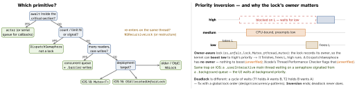

ios-swift · folio
In one line: A lock makes a critical section mutually exclusive and has an
owner (the thread that took it, which must release it); a semaphore is a
counter with no owner; a serial queue or actor serialises by
ownership instead. Pick by: is there an await inside? how short is it? do you
need a count? Then: never block the cooperative pool, never hold a lock across a call-out.
Download PDF Print view LaTeX source


The primitives
| Primitive | since | recursive | Know this |
|---|---|---|---|
Mutex<State> | iOS 18 | no | Synchronization; ~Copyable, Sendable; withLock closure is sync ⇒ no await inside |
OSAllocated- UnfairLock | iOS 16 | no | import os; heap-allocated = stable address; withLock, lockIfAvailable |
os_unfair_lock | iOS 10 | no | fastest; unlock on another thread aborts; Swift &lock may copy/move it |
NSLock | iOS 2 | no | 2nd lock() on the same thread hangs forever; unlock on the locking thread |
NSRecursive- Lock | iOS 2 | yes | same thread may re-take it; unlock as often |
pthread_ mutex_t | POSIX | attribute | init/destroy; heap-allocate it in Swift |
Dispatch- Semaphore | GCD | — | counter, no owner, any thread signals; freed while value < initial ⇒ crash |
serial queue, actor | — | — | ownership, not a lock; q.sync onto itself deadlocks |
How it works
- Uncontended locks are cheap; contention costs — copy out, work outside.
- Barrier (
async(flags: .barrier)) waits for earlier blocks, runs alone, then lets reads resume — only on a private concurrent queue: on a global or serial queue it is a plainasync/sync. DispatchQueue.concurrentPerform(iterations:)= parallelfor, returns when all iterations are done; give each iteration its own slot, neverappend.Thread {…}.start(); selectors are#selector(job(_:)), not ObjC’sjob:; rawpthread_createtakes its context viaUnmanaged. Rarely worth it over GCD / tasks.
Sizing: CPU- vs I/O-bound
CPU-bound: threads ≈ cores; more only adds context switches. I/O-bound: threads = cores / (1 - b), b = fraction of time blocked (8 cores, b = 0.9 → 80). On Apple you size concurrency, not threads: GCD and the cooperative pool (≈ one thread per core, never grows) own the threads — set maxConcurrentOperationCount, a task-group width, or httpMaximumConnectionsPerHost; do I/O with async APIs.
RunLoop — sleeps when idle, wakes for work
Every thread has one; the main run loop is started by UIApplicationMain, a secondary thread must run its own — and with no source or timer it exits at once. A GCD worker never runs it, so a Timer.scheduledTimer made there never fires(unverified). Modes filter sources: a scroll switches main to tracking mode, so a timer in .default stalls — add it for .common. Touch a RunLoop only from its own thread.
Example — the three you will write
import Synchronization // iOS 18
final class Counter: Sendable { // no @unchecked
private let n = Mutex(0)
func next() -> Int { n.withLock { $0 += 1; return $0 } } }
final class Store { // reader-writer
private let q = DispatchQueue(label: "store",
attributes: .concurrent)
private var d: [String: Int] = [:]
func get(_ k: String) -> Int? { q.sync { d[k] } }
func set(_ k: String, _ v: Int) {
q.async(flags: .barrier) { self.d[k] = v } } }
let sem = DispatchSemaphore(value: 3) // max 3 at once
for job in jobs { // bg thread, not main
sem.wait() // wait BEFORE dispatch
work.async { defer { sem.signal() }; run(job) } }Traps
- “Semaphore(1) = mutex” — no owner: any thread signals, no priority boost.
sem.wait()inside 15 queued blocks parks up to 12 workers → GCD spawns more (thread explosion). On main: hang → watchdog.&mon avar m = pthread_mutex_t(): valid for that call only — the lock can move. UseOSAllocatedUnfairLock/Mutex.- Appending to one array from concurrent blocks = data race (crash, lost items).
- A lock or semaphore held across
await: the task may resume on another thread. sleep(2)blocks the thread;Task.sleep(for:)suspends the task.
Remember
Short and sync → Mutex. Has await → actor. Counting → semaphore.
Many readers → barrier. Owners beat inversion.